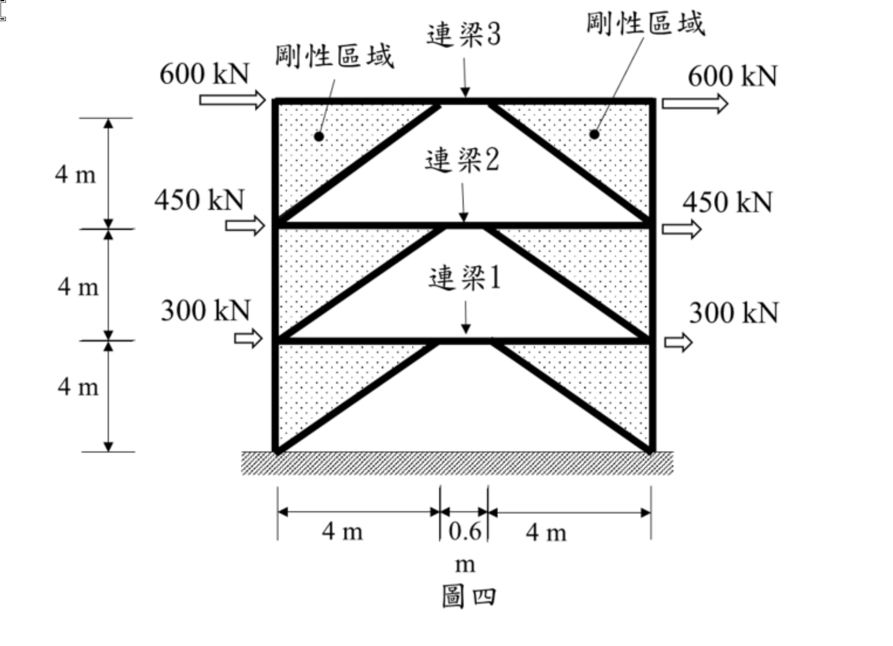

考題編號：SA-2023-4
主分類： SA-U3-2 建築結構系統分析
副分類： 無
分析法： 機構分析與剛度比例分配
標籤： 偏心斜撐構架 EBF 剛性區域 連梁旋轉角 層剪力 層間位移
1. 原始題目重述 (Problem Restatement)
如圖四所示之三層樓平面結構，各樓層樓板承受不同的水平力，由下而上依序為 300、450 及 600 kN 分別施加於各樓層樓板之兩端。構架中配置斜撐桿件，斜撐與梁桿件於梁桿件中央處連接位置留有間距，並定義此部分為「連梁」桿件，連梁與梁桿件之斷面相同且為連續。構架中梁、柱與斜撐所形成之三角型區域勁度相對較大，可視為剛性區域，而各樓層連梁桿件之剛度皆為 $EI$。若於該受力情況下構架頂端之水平側向位移為 6 cm 時，不需經過精確分析，試推估各樓層連梁桿件端部旋轉變形角為何？（25 分）

圖說：這是一個三層偏心斜撐構架 (EBF)。每層高度 $h = 4\text{ m}$，總高 $12\text{ m}$。連梁位於中央，長度 $e = 0.6\text{ m}$。兩側剛性區域之底寬 $L_1 = L_2 = 4\text{ m}$，總跨度 $L = 4+0.6+4 = 8.6\text{ m}$。外力由圖示可知，每層左右兩端均有同向箭頭標示推力。
2. 考題核心精神與出題者意圖 (Core Concepts & Examiner's Intent)
核心精神：
- 偏心斜撐構架 (EBF) 的運動學機理：本題為典型的 EBF 考題，出題者透過將兩側梁、柱、斜撐視為「剛性區域」，引導考生運用純幾何關係推導出層間漂移角（Story drift angle）與連梁旋轉角（Link rotation angle）之間的放大關係（$\gamma = \frac{L}{e}\theta$）。
- 側向勁度的串聯模型分配：由於各樓層之剛性區域幾何尺寸完全相同，且連梁剛度均為 $EI$，因此各樓層的側向抗推勁度（Lateral stiffness）為一個常數。考生需領悟此特點，並將總位移依據「層間位移與層剪力成正比」的觀念進行比例分配，這就是題目所提示的「不需經過精確分析」之真義。
3. 解題戰略地圖與陷阱分析 (Strategic Roadmap & Trap Analysis)
戰略步驟：
- 運動學關係推導：透過幾何關係，分析當樓層發生層間漂移 $\Delta_i$ 時，兩側剛性三角形的轉角 $\theta_i = \Delta_i / h$。推導出連梁兩端的相對垂直位移，進而求出連梁旋轉變形角 $\gamma_i = \frac{L}{e} \theta_i$。
- 計算各層層剪力：依據給定之外力，由上至下累加計算出各層之樓層剪力 $V_1, V_2, V_3$。
- 分配層間位移：已知各樓層側向勁度相同，故層間位移 $\Delta_i$ 與層剪力 $V_i$ 成正比。利用比例關係，將頂層總位移 $\Delta_{roof} = 6\text{ cm}$ 分配給各層，求出各層真實的 $\Delta_i$ 與 $\theta_i$。
- 計算連梁變形角：將求得的 $\theta_i$ 代入步驟一的運動學公式中，得出各樓層連梁的旋轉變形角。
陷阱分析：
- 陷阱一：盲目建立矩陣分析。若忽略「不需經過精確分析」及「剛性區域」的提示，試圖以傾角變位法或直接勁度法建立全結構矩陣，將會耗盡時間且無法求解（因未給定 $EI$ 絕對值）。
- 陷阱二：錯估外力總和。圖示中各樓板兩側皆有標示外力（例如左側推 600，右側推 600），若只取單邊計算層剪力，雖不影響最終「位移比例分配」的正確結果，但概念上容易使人困惑。
- 陷阱三：連梁旋轉角定義。需清楚連梁的「端部旋轉變形角 $\gamma$」是由弦轉角與剛體轉角疊加而成，切勿僅將其當作 $\theta_i$。
3.5 變數層次分析 (Variable Hierarchy Analysis)
複習提示：第一次解題後，在每個卡住的知識點旁標記
⚠；第二次複習時只看有⚠的項目。
最終目標
推估各樓層連梁桿件之端部旋轉變形角 $\gamma_i$
本題關鍵公式（依計算順序）
$\boxed{\cdot}$ = 需由前步驟推導，非題目直接給定的變數
$$\text{Step 1: } \gamma_i = \frac{L}{e} \theta_i$$
$$\text{Step 2: } V_i = \sum_{j=i}^{n} F_j$$
$$\text{Step 3: } \Delta_i \propto \boxed{V_i} \Rightarrow \Delta_i = \Delta_{roof} \times \frac{\boxed{V_i}}{\sum \boxed{V_i}}$$
$$\text{Step 4: } \theta_i = \frac{\boxed{\Delta_i}}{h}$$
$$\text{Step 5: } \gamma_i = \frac{L}{e} \boxed{\theta_i}$$
L1：題目直接給定
| 符號 | 數值 | 說明 |
|---|---|---|
| $h$ | $4\text{ m}$ | 每層樓高 |
| $e$ | $0.6\text{ m}$ | 連梁長度 |
| $L_1, L_2$ | $4\text{ m}, 4\text{ m}$ | 剛性三角形底寬 |
| $\Delta_{roof}$ | $6\text{ cm} = 0.06\text{ m}$ | 頂層總位移 |
L2：需知識點推導
| 符號 | 公式/來源 | 卡關? |
|---|---|---|
| $L$ | $L_1 + e + L_2 = 8.6\text{ m}$ | 總跨距 |
| $V_i$ | 各層剪力 (由外力累加) | |
| $\Delta_i$ | 層剪力比例分配總位移 | |
| $\theta_i$ | $\Delta_i / h$ |
L3：深層知識（不懂就卡住）
| 知識點 | 說明 | 卡關? |
|---|---|---|
| EBF 連梁變形角公式 | $\gamma = \frac{L}{e} \theta$。由剛性三角形旋轉產生連梁相對垂直沉陷，再轉換為端點轉角推導而來。 | ⚠ |
| 側向勁度比例不變性 | 各樓層幾何與剛度條件完全相同，樓層抗推剛度 (Lateral stiffness) 為常數，故位移分配僅與層剪力成正比。 |
4. 步驟化詳細計算過程 (Step-by-Step Detailed Calculation)
Step 1：推導連梁旋轉變形角 $\gamma_i$ 之幾何關係
當第 $i$ 層發生層間位移 $\Delta_i$ 時，層間漂移角 $\theta_i = \Delta_i / h$。
因兩側三角形為剛性區域，故將整體繞其底部節點發生剛體轉角 $\theta_i$。
- 左側剛性三角形旋轉 $\theta_i$，連梁左端點產生向下之相對位移 $\delta_L = L_1 \cdot \theta_i$。
- 右側剛性三角形旋轉 $\theta_i$，連梁右端點產生向上之相對位移 $\delta_R = L_2 \cdot \theta_i$。
連梁兩端之相對垂直位移為 $\Delta_v = \delta_L + \delta_R = (L_1 + L_2)\theta_i$。
連梁之弦轉角 (Chord rotation) 為 $\alpha = \Delta_v / e = \frac{L_1+L_2}{e}\theta_i$。
加上端點隨剛性區域共同旋轉之角度 $\theta_i$，連梁相對於未變形軸線之端部總旋轉變形角 $\gamma_i$ 為：
$$\gamma_i = \alpha + \theta_i = \frac{L_1 + L_2}{e}\theta_i + \frac{e}{e}\theta_i = \frac{L_1 + L_2 + e}{e}\theta_i = \frac{L}{e}\theta_i$$
代入數值：$L = 4 + 0.6 + 4 = 8.6\text{ m}$，$e = 0.6\text{ m}$，得放大倍率：
$$\gamma_i = \frac{8.6}{0.6}\theta_i = \frac{43}{3}\theta_i$$
Step 2：計算各層層剪力 $V_i$
依據圖示，每樓層樓板兩端皆標示同向推力，設該層總外力為 $F_i$。
頂層（第 3 層）：$F_3 = 600 + 600 = 1200\text{ kN}$
中層（第 2 層）：$F_2 = 450 + 450 = 900\text{ kN}$
底層（第 1 層）：$F_1 = 300 + 300 = 600\text{ kN}$
(註：若視為圖示兩端合力為 600, 450, 300，後續分配比例依然不變)
各層層剪力：
- $V_3 = F_3 = 1200\text{ kN}$
- $V_2 = F_3 + F_2 = 1200 + 900 = 2100\text{ kN}$
- $V_1 = F_3 + F_2 + F_1 = 2100 + 600 = 2700\text{ kN}$
Step 3：依層剪力比例分配層間位移
由於各層剛性區域尺寸及連梁剛度 $EI$ 皆相同，各層之側向勁度（Lateral stiffness）為常數 $K_0$。
層間位移 $\Delta_i = V_i / K_0 \propto V_i$。
層間位移比例 $\Delta_1 : \Delta_2 : \Delta_3 = V_1 : V_2 : V_3 = 2700 : 2100 : 1200 = 9 : 7 : 4$。
已知頂端總位移 $\Delta_{roof} = \Delta_1 + \Delta_2 + \Delta_3 = 6\text{ cm} = 0.06\text{ m}$。
比例總和 $= 9 + 7 + 4 = 20$ 份。
分配各層層間位移：
- $\Delta_1 = 0.06\text{ m} \times \frac{9}{20} = 0.027\text{ m}$
- $\Delta_2 = 0.06\text{ m} \times \frac{7}{20} = 0.021\text{ m}$
- $\Delta_3 = 0.06\text{ m} \times \frac{4}{20} = 0.012\text{ m}$
Step 4：推估各樓層連梁旋轉變形角 $\gamma_i$
先求各層層間漂移角 $\theta_i = \Delta_i / h$ ($h = 4\text{ m}$)：
- $\theta_1 = 0.027 / 4 = 0.00675\text{ rad}$
- $\theta_2 = 0.021 / 4 = 0.00525\text{ rad}$
- $\theta_3 = 0.012 / 4 = 0.003\text{ rad}$
代入幾何放大公式 $\gamma_i = \frac{43}{3}\theta_i$：
-
第 1 層 (底層) 連梁 1：
$$\gamma_1 = \frac{43}{3} \times 0.00675 = \mathbf{0.09675 \text{ rad}}$$ -
第 2 層 (中層) 連梁 2：
$$\gamma_2 = \frac{43}{3} \times 0.00525 = \mathbf{0.07525 \text{ rad}}$$ -
第 3 層 (頂層) 連梁 3：
$$\gamma_3 = \frac{43}{3} \times 0.00300 = \mathbf{0.04300 \text{ rad}}$$
(若需轉換為角度：$\gamma_1 \approx 5.54^\circ, \gamma_2 \approx 4.31^\circ, \gamma_3 \approx 2.46^\circ$)
5. 關鍵爭議點與進階探討 (Critical Issues & Advanced Discussion)
- 外力解讀差異的影響：部分考生可能將樓板兩端標示的數值解讀為該層的單一總力（例如頂層總推力就是 600 kN），這樣算出的層剪力會是 $V_3=600, V_2=1050, V_1=1350$。可以發現其比例 $1350:1050:600$ 依然是 $9:7:4$。因為位移是依據比例來分配 $\Delta_{roof}$，所以無論如何解讀外力總和的絕對值，只要相對比例正確，解出的 $\gamma_i$ 答案皆完全一致。此為出題者精心設計的巧思。